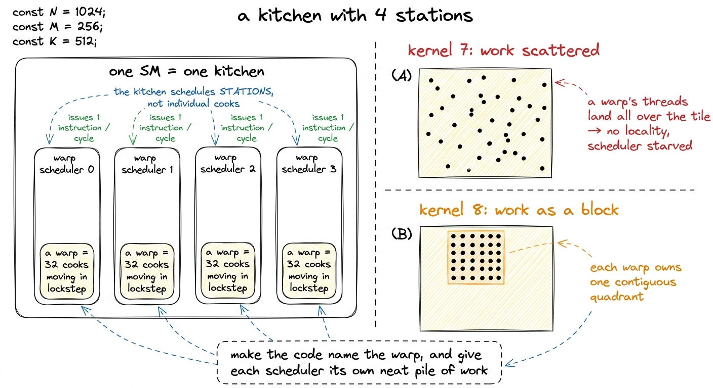
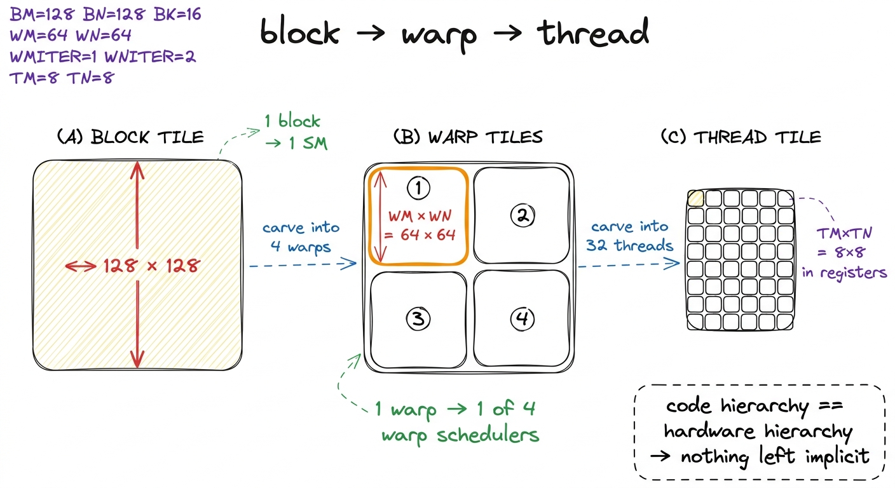
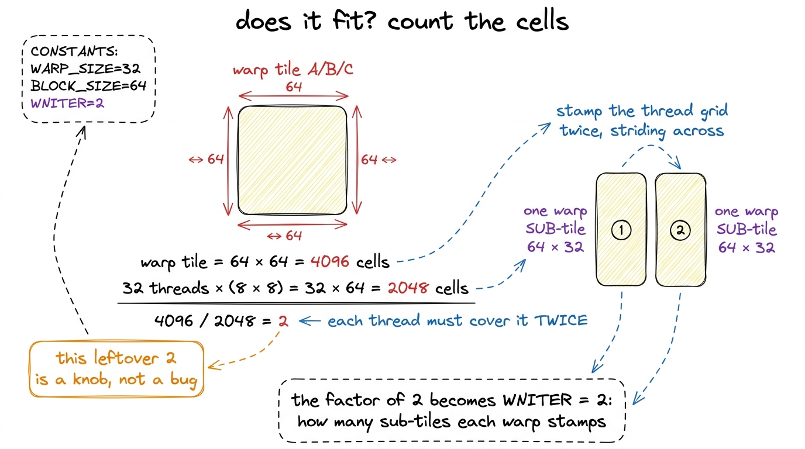
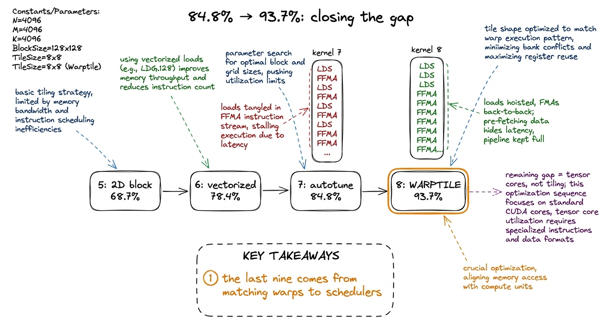
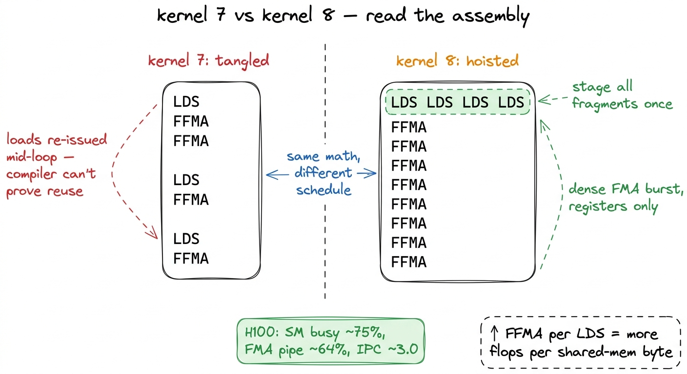
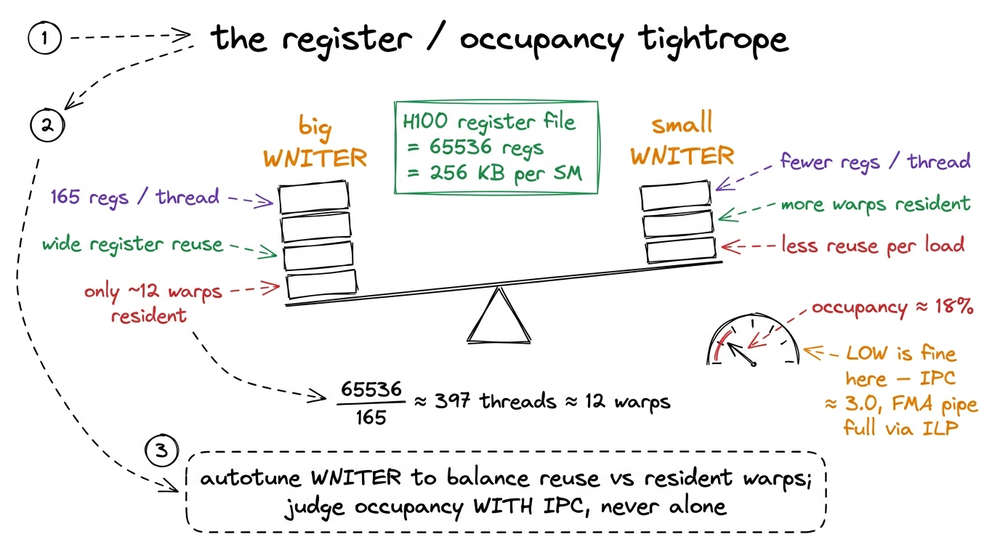
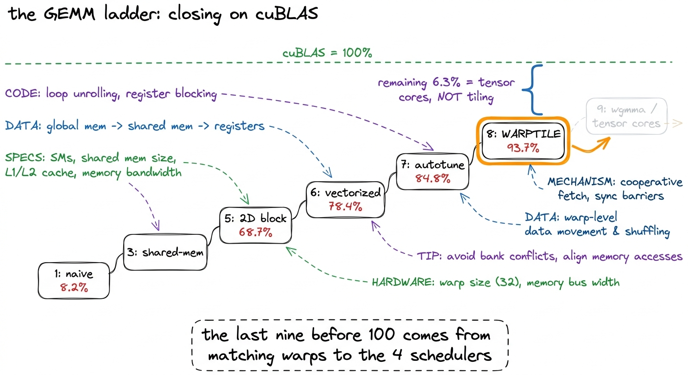

Kernel 8: Warptiling 93.7%
Before we touch a single line of code, let me state the question this kernel answers, because it is a narrow one and it is easy to get lost. We already have a fast GEMM. Kernel 7 swept its whole parameter space and landed at 84.8% of cuBLAS. So the question is not "how do I write a matmul." It is: when a good kernel has stalled, where does the last hard 9% come from, and why is it hiding in a level of the hardware we have not been naming? That level is the warp, and by the end of this page you will see exactly why matching your loops to it buys the jump to 93.7% — and why no amount of extra autotuning on the old design could have.
If you are arriving here cold, here is the one paragraph of background you need. A GEMM is C = A × B, a matrix multiply. On a GPU you never compute all of C at once; you cut it into tiles and hand each tile to a thread block, which is a group of threads that run together on one Streaming Multiprocessor (SM) — think of an SM as one core of the GPU, and a modern H100 has 132 of them. Each thread inside the block computes a little patch of the output tile and keeps its running sums in registers, the tiny ultra-fast scratch memory private to that thread. The trick that makes GEMM fast is reuse: load a value from slow memory once, then use it in many multiply-adds before you throw it away. Every kernel in this series has been a variation on "reuse harder." If that paragraph made sense, you can keep up with the rest.1 If any of those terms felt shaky, the sibling articles threads, warps, blocks, grids and the 2D block-tiling kernel build them from scratch. This page recaps just enough to stand on its own, but those go slower.
The stall: a good kernel that has run out of road
Let me be concrete about what "stuck at 84.8%" actually means, because the number alone hides the interesting part. Kernel 7 was a block-tiling design. It had a 128 × 128 block tile — the chunk of C that one block owns — an 8 × 8 register tile per thread — the patch of accumulators one thread owns — float4 vectorized loads so each memory instruction moved 16 bytes at once, and an autotuner that had tried every legal combination of BM, BN, BK, TM, TN and handed back the best. That is a genuinely strong kernel. On paper there is nothing obviously wrong with it.
And yet it plateaued. When I first hit this wall I did the naive thing: I let the autotuner run longer, over a finer grid. It found nothing better. That is the moment worth stopping on. If sweeping every parameter of a design cannot improve it, the ceiling is not in the parameters — it is in the design's model of the machine. And kernel 7's model of the machine had exactly two levels in it: the block and the thread. Blocks parallelize across SMs. Threads run inside a block. That is the whole picture the code knew about.
But the hardware runs on three levels, not two. Between the block and the thread sits a unit the code never named, and it is the unit the GPU actually schedules: the warp.
The one idea: the warp is what the machine schedules
Here is the fact that reorganizes everything. On an NVIDIA GPU, threads do not execute one at a time, and blocks do not execute as a lump. The hardware groups every 32 consecutive threads into a warp, and the warp — all 32 threads moving in lockstep, one instruction issued for the whole group — is the smallest thing the scheduler ever deals with. You do not schedule a thread. You schedule a warp.2 "Lockstep" is the classic SIMT picture and it is close enough for this article. On Volta and later there is independent thread scheduling, so threads in a warp can technically diverge and reconverge. In dense GEMM there is no branching in the inner loop, so all 32 lanes really do march together and the simple picture holds exactly.
And an SM does not have one scheduler. It has four warp schedulers, each an independent little engine that picks one resident warp per cycle and issues its next instruction. This is true on the A6000 in siboehm's original write-up and it is true on the H100 we are targeting — four schedulers per SM, one per SM sub-partition. So the real execution hierarchy is: the block lives on an SM; the SM has four schedulers; each scheduler juggles some warps; each warp is 32 threads. That middle layer — warp on scheduler — is precisely what kernel 7 ignored.

figure rendering · The central mental model: an SM is a kitchen with four stations, and tHold onto that kitchen picture — it is the mental model for the whole article. One SM is a kitchen. It has four stations (schedulers). A warp is a team of 32 cooks that always moves together, and the kitchen hands work to stations, not to individual cooks. If you toss ingredients randomly around the kitchen, the stations spend their time reaching across the room for the next thing. If you give each station its own neat pile of ingredients right in front of it, everyone stays busy. Kernel 7 tossed ingredients everywhere. Kernel 8 gives each station its pile.
Why "scattered" is a real cost, not a metaphor
Let me make that concrete, because "scattered work is bad" is the kind of thing that sounds true but you should demand a reason for. In kernel 7, a thread's position in its block came from a single flat index, threadIdx.x. The 32 threads of warp 0 were threadIdx.x 0 through 31. But where in the output tile those 32 threads wrote depended on how the flat index got mapped to rows and columns — and that mapping was chosen to make the shared-memory loads convenient, not to keep a warp together. The upshot: a single warp's 32 threads could be smeared across a tall, wide strip of the 128 × 128 tile.
Why does that hurt? Two reasons, and both are about reuse.
First, shared-memory bandwidth. When a warp issues a load from shared memory, the hardware services all 32 lanes as one transaction if their addresses cooperate, and splits it into multiple slower transactions if they do not. Scattered threads mean scattered addresses mean more transactions per load. Every extra transaction is shared-memory bandwidth spent on the same data.
Second, and this is the subtle one, register reuse. A value a thread pulls into a register can be reused across every multiply-add that needs it — but only within that one thread. If a warp's threads are scattered, the fragment of A that thread 0 loaded and the fragment thread 1 loaded do not line up into anything the compiler can treat as a dense, reusable block. The loads and the arithmetic stay tangled. We will see this tangle directly in the SASS later; for now, take it as the thing we are trying to untangle.
So the fix is not clever. It is just: insert a tiling level between the block and the thread, so that one warp owns one contiguous rectangle of the output. Name the warp in the code. Let the code's loop hierarchy mirror the silicon's scheduler hierarchy, one to one.
The three levels, made explicit
Here is the whole design in one breath, and then we will derive every number. A block tile is the chunk of C one thread block owns; it lives on one SM. A warp tile is the sub-chunk one warp owns; it lives on one of that SM's four schedulers. A thread tile is the little 8 × 8 patch of accumulators one thread owns; it lives in that thread's registers. Blocks parallelize across SMs, warps parallelize across the four schedulers within an SM, and threads expose the instruction-level parallelism a single scheduler extracts from one warp. Three levels of tiling, three levels of hardware, exactly aligned.

figure rendering · Block, warp, and thread tiles nested inside one another. Each level ofNow the arithmetic, derived by hand so no number falls from the sky. Keep the 128 × 128 block tile from kernel 7 — no reason to change what worked. Choose a block of 128 threads. Since a warp is 32 threads, that is 128 / 32 = 4 warps per block. Four warps, four schedulers per SM — one warp resident per scheduler, which is exactly what we want the kitchen to look like.
Now partition the 128 × 128 block tile among those 4 warps. The natural cut is a 2 × 2 grid of warp tiles: 2 warps down, 2 warps across. Each warp tile is therefore 128 / 2 = 64 rows by 128 / 2 = 64 columns. Call these WM = 64 and WN = 64. Four warp tiles of 64 × 64 exactly cover the 128 × 128 block. Good.
Inside one 64 × 64 warp tile we have 32 threads, each owning an 8 × 8 (TM = 8, TN = 8) register tile. Let us check whether that fits, because it had better. A warp tile has 64 × 64 = 4096 output elements. Thirty-two threads each computing 8 × 8 = 64 elements cover 32 × 64 = 2048 elements. But the warp tile has 4096. So each thread must cover the warp tile twice over: 4096 / 2048 = 2. That leftover factor of two is not an error and it is not slack. It is a real degree of freedom, and naming it correctly is the heart of this kernel.

figure rendering · Counting cells by hand: 32 threads at 8×8 cover only half a 64×64 warpWarp sub-tiles: naming the factor of two (WMITER, WNITER)
Here is the natural question. Each thread has to cover its warp tile twice — but how? There are two ways to spend that factor of two, and they are genuinely different.
Way one: make the thread tile bigger. Instead of 8 × 8, give each thread 8 × 16 and be done — one contiguous stamp covers everything. Way two: keep the thread tile at 8 × 8 but have the warp lay it down twice, striding to a different part of the warp tile each time. The second way is what warptiling chooses, and the count of stamps is the new knob: WMITER (stamps down the M dimension) and WNITER (stamps across N).
With WMITER = 1 and WNITER = 2, each warp lays down two 64 × 32 warp sub-tiles side by side to cover its 64 × 64 region. The sub-tile dimensions fall right out: WSUBM = WM / WMITER = 64 and WSUBN = WN / WNITER = 32. So the full set of new warp-level knobs is WM, WN, WMITER, WNITER — four numbers, and they are the entire content of the warp level. Everything else (WSUBM, WSUBN) is derived.
Why prefer stamping twice over one fat thread tile? Two honest reasons.3 There is a hard ceiling forcing your hand here: a thread can address at most 255 registers on NVIDIA hardware. An 8 × 16 thread tile means 128 accumulators plus operand fragments plus loop bookkeeping, and you run into that wall fast. Splitting into sub-tiles keeps each thread's register footprint tractable while still covering the same area. First, the register ceiling above. Second, the stride: because the second sub-tile lands 32 columns away from the first, one thread's outputs are interleaved across the warp tile rather than piled in one corner. That interleaving spreads each thread's float4 shared-memory reads across more memory banks, which reduces bank conflicts. So the sub-tile stride is doing double duty — it keeps registers in budget and it improves the access pattern.
Why this actually reuses more: the register file as a cache
Now the payoff, and this is the part worth being slow and precise about, because it is the reason warptiling is faster and not just tidier.
Inside the k-loop, each thread does three things per step. It loads a fragment of A from shared memory into registers — call that array regM. It loads a fragment of B into registers — regN. Then it computes an outer product regM ⊗ regN and adds it into its accumulators. An outer product of an 8-vector with an 8-vector produces an 8 × 8 block of products — 64 multiply-adds — from just 8 + 8 = 16 loaded values. That ratio, 64 flops from 16 loads, is the reuse. Every loaded value participates in 8 different products.
Now watch what the sub-tile loop does to that ratio. Because we stamp WNITER = 2 sub-tiles, each thread loads regM once and reuses it across both column sub-tiles. So one load of regM now feeds 2 × 8 = 16 products, not 8. The loaded operand is amortized across the whole sub-tile grid. The register file — the fastest memory on the chip, private to the thread, no transaction, no conflict — has become the innermost cache, and the warp sub-tile structure is what lets each cached value get milked to the maximum before it is overwritten.
That is the mechanism. Fewer shared-memory reads per flop; each read reused across more arithmetic. "More flops per shared-memory byte" is the one-line summary, and it is not a vague aspiration — it is WNITER and WMITER literally multiplying the reuse of every loaded fragment.

figure rendering · The inner loop loads each operand fragment into registers once and reuThe loop nest
Concept first, so the code reads as confirmation rather than a puzzle. From the outside in: iterate over the BK slice of the shared tile with index dotIdx. For each slice, first load all the regM and regN fragments this thread needs across its WMITER and WNITER sub-tiles. Then run the four innermost loops — over WMITER, WNITER, TM, TN — doing pure fused-multiply-adds against registers, touching no memory at all.
Separating the loads from the compute is the whole trick, and it is worth saying why in one more sentence. When the compiler sees "load, load, …, then a long dense run of independent FMAs," it can schedule those FMAs back-to-back with nothing waiting on memory in between, and it can prove each loaded fragment is reused. When loads and FMAs are interleaved, it cannot prove either, and it plays it safe by re-issuing loads.
// registers for this thread's fragments and accumulators
float regM[WMITER * TM] = {0.0f};
float regN[WNITER * TN] = {0.0f};
float threadResults[WMITER * TM * WNITER * TN] = {0.0f};
for (uint dotIdx = 0; dotIdx < BK; ++dotIdx) {
// 1. stage this thread's A/B fragments from SMEM into registers
for (uint wSubM = 0; wSubM < WMITER; ++wSubM)
for (uint i = 0; i < TM; ++i)
regM[wSubM * TM + i] =
sharedA[dotIdx * BM + warpRow * WM + wSubM * WSUBM
+ threadRowInWarp * TM + i];
for (uint wSubN = 0; wSubN < WNITER; ++wSubN)
for (uint i = 0; i < TN; ++i)
regN[wSubN * TN + i] =
sharedB[dotIdx * BN + warpCol * WN + wSubN * WSUBN
+ threadColInWarp * TN + i];
// 2. outer products — registers only, no memory
for (uint wSubM = 0; wSubM < WMITER; ++wSubM)
for (uint wSubN = 0; wSubN < WNITER; ++wSubN)
for (uint tm = 0; tm < TM; ++tm)
for (uint tn = 0; tn < TN; ++tn)
threadResults[(wSubM * TM + tm) * (WNITER * TN) + wSubN * TN + tn]
+= regM[wSubM * TM + tm] * regN[wSubN * TN + tn];
}Notice what did not change from kernel 7. Same 128 × 128 block tile. Same float4 loads of A and B from global memory into shared memory. Same accumulation into float registers. The math is byte-for-byte identical.4 Because the math is identical, this kernel produces bitwise-identical output to kernel 7 — same operations, same order, same rounding. Warptiling is purely a scheduling/indexing change. That is a nice property when you are debugging: if the numbers differ, it is an indexing bug, not a numerical one. What changed is the indexing. warpRow and warpCol come from threadIdx.x / 32 — the warp's ID within the block. threadRowInWarp and threadColInWarp come from threadIdx.x % 32 — the lane within the warp, arranged as an 8 × 4 grid. Every thread now knows which warp it is in, and lays its outputs down inside that warp's tile, densely, instead of wherever a flat index happened to scatter them.
The evidence: read the SASS
Hypothesis is nice; let me show the machine agreeing. Point Nsight Compute at kernel 7 and kernel 8 back to back and dump the SASS — the actual assembly the GPU runs, one level below PTX.
In kernel 7, the inner loop is a tangle: an LDS (load-from-shared) instruction, a couple of FFMA (fused float multiply-add) instructions, another LDS, more FFMA. The compiler could not prove which loads were reusable, so it kept re-issuing LDS. In the warptiled kernel, the disassembly separates cleanly: a burst of LDS at the top of each dotIdx iteration, then a long uninterrupted run of FFMA reading only registers. The ratio of FFMA to LDS in the inner loop goes up. That ratio is "more flops per shared-memory byte," spelled in assembly.5 The hardware feature doing the real work here is the operand collector / register-cache stage between the register file and the FMA pipes. A tight, predictable per-warp register footprint with repeating strides hits in that stage and dodges register-bank conflicts; a scattered footprint does not. This is invisible in PTX and only shows up once you read SASS.
On the H100, profiling the warptiled kernel shows the SM busy around 74–76%, the FMA pipe active for roughly 64% of active cycles, and instructions-per-cycle near 3.0 — close to the four-scheduler ceiling of one issue each per cycle. Those are the numbers of a kernel that is finally keeping its stations fed.

figure rendering · The SASS tells the story directly. Kernel 7 interleaves shared-memoryThe cost: registers, and the occupancy tightrope
Nothing is free, and it would be dishonest to pretend otherwise. The explicit warp tiling adds registers. Each thread now holds regM, regN, and a fatter threadResults array, and the WMITER × WNITER sub-tile scheme multiplies the fragment count. In practice this warptiled kernel uses on the order of 165 registers per thread — well within the 255 ceiling, but high.
Why does that matter? Because of occupancy, and this is worth deriving. An SM has one register file, shared by every thread resident on it. On the H100 that file holds 65536 32-bit registers — 256 KB.6 The 256 KB figure is the register file. Do not confuse it with shared memory, which is a separate on-chip pool — up to 228 KiB usable per block on the H100, out of 256 KiB total, with about 1 KiB reserved for the system. Register pressure and shared-memory pressure are two independent occupancy constraints; here the binding one is registers. If each thread wants 165 registers, then the number of threads that can live on the SM at once is at most 65536 / 165 ≈ 397 threads, which is about 12 warps. That is the entire budget of warps the four schedulers get to hide latency with. Ask for more registers per thread and fewer warps fit; the SM has less to switch to when one warp stalls. Ask for fewer registers and you give up the reuse.
So there is a tightrope. WNITER is the dial that walks it. Turn WNITER up: wider reuse, bigger threadResults, more registers per thread, fewer resident warps — high arithmetic intensity but thin latency hiding. Turn WNITER down: narrower reuse but more warps resident. The autotuner's whole job at this level is to find where the two forces balance. Measured occupancy for the good configuration sits around 18% — which sounds alarmingly low until you remember that a GEMM inner loop is packed with independent FMAs, so it hides its own latency through instruction-level parallelism and does not need a fat warp pool. Low occupancy with high IPC is exactly the signature of a well-tuned compute-bound kernel.7 This is a place beginners get burned: "occupancy 18%, that's terrible, add more warps." For memory-bound kernels, yes. For a register-tiled GEMM whose inner loop is a wall of back-to-back FMAs, no — the ILP inside one warp already keeps the FMA pipe full, and spending registers to raise occupancy would lower throughput. Always read occupancy next to IPC, never alone.

figure rendering · Register pressure and occupancy pull against each other. WNITER is theThe number
Autotune the six parameters that matter — BM, BN, BK, WM, WN, WNITER (with TM, TN following from the others) — and the warptiled kernel lands at 93.7% of cuBLAS, about 21.7 TFLOP/s on the reference GPU.
Sit with the size of that jump for a second, because it is easy to under-rate. From 84.8% to 93.7% is not a headline multiple. It is the last hard nine — the kind of gain you only buy by making the scheduler's job trivial instead of merely possible. Everything up the ladder before this was about reuse in the abstract; this step was about handing that reuse to the hardware in the exact shape the hardware schedules. We are now inside cuBLAS's own territory, close enough that the remaining gap is not about tiling anymore at all.

figure rendering · The full ladder. Warptiling takes the CUDA-core design to 93.7% of cuBWhere the last 6% lives — and why the tiling is not wasted
It is tempting to keep pushing this exact design: a tenth warp knob, a cleverer swizzle, one more overnight autotune. I will save you the disappointment — it will not get you the remaining 6.3%, and the reason is important.
Every kernel on this ladder, including this one, is a CUDA-core kernel. It does its multiply-adds on the FP32 FMA pipes, one multiply-add per instruction per lane. cuBLAS, on a real workload, does not. It issues to the tensor cores, and a single tensor-core instruction does a whole matrix-multiply-accumulate at once. To put a number on the gap: on the H100 a single wgmma.mma_async.sync.aligned.m64n64k16 instruction performs 64 × 64 × 16 = 65,536 multiply-accumulates — sixty-five thousand MACs from one instruction, versus one MAC per FFMA. That is not a tiling problem. No arrangement of FMAs competes with an instruction that does 65,536 MACs in a shot. Closing the last stretch means changing the instruction, not the tiling.
But — and this is the point I want you to leave with — the tiling is not wasted. It is the prerequisite. Tensor-core instructions consume operands in fixed fragment shapes, fed from shared memory, computed by a warp (or on Hopper, a warpgroup of four warps = 128 threads). The wgmma instruction is literally issued by a warpgroup and each thread ends up owning a fixed slice — 32 accumulator values — of the 64 × 64 result. Look at that number again: a warp is exactly the granularity a tensor-core instruction operates at. The block→warp→thread hierarchy we just built by hand is precisely the addressing you need to stage tensor-core fragments. The mental model transfers with zero loss.
So in the next kernels we keep this three-level skeleton and swap the innermost FFMA loop for the tensor-core path — mma on Ampere, and on this H100 the asynchronous, warpgroup-wide wgmma that eats a 64 × N fragment straight out of shared memory, with the Tensor Memory Accelerator streaming those fragments in and swizzling them to dodge bank conflicts. That is where the remaining nine lives. We built the warp tiling not to reach 93.7% — we built it because you cannot reach the tensor cores without it. On to the next rung.